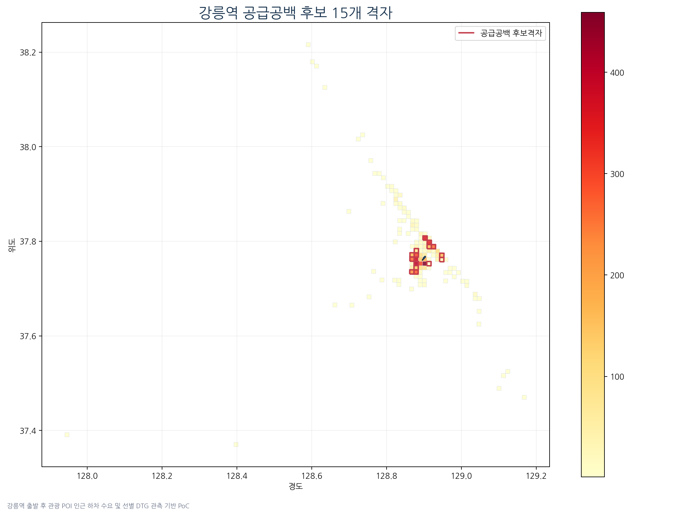

강릉역의 59건은 15개 위치에 걸친 시간별 후보입니다
59건은 격자·날짜·승차시간대의 조합이고, 지도상 고유 위치는 15개입니다. 일부 위치가 여러 날짜·시간대에 후보로 나타나므로, 위치 수와 함께 반복되는 시간대를 살펴봐야 조사 일정을 정할 수 있습니다.
근거: 후보 지도와 시간대 자료 →I · 교통·공간 분석연구 02 / 12 · 회사 업무
지역 도착 이후의 관광교통 이동과 연결성을 분석한다는 제안 목적에 맞춰 강릉역·청주공항 샘플을 작성했다. TIMS 관문 출발 통행의 하차점을 1km 이내 최근접 관광 POI에 연결하고, 전국 표준 1km 격자와 승차 요일·시간대별로 집계했다. 별도 공급 공백 후보 분석에서는 수요·잠재 공급 관측과 최소 비교 표본 조건을 적용해 강릉역 59개 후보 조합·15개 위치를 구분했다. 제안서의 전국·다년 계획과 실제 샘플 범위를 분리하고, 관광 목적·빈차 부족을 확정하지 않았다.
주요어 택시 운행 · 관광 POI · 공간 결합 · 후보 선별
원문 대조 · 발표자료·보고서·현재 산출물의 해당 부분 확인
택시 데이터를 통해 지역에 도착한 이후의 이동과 관광자원 간 연결·접근성을 분석하고, 관광교통 개선 검토에 필요한 기초 근거를 제시한다. 이 페이지는 제안 준비에서 실제 수행한 두 관문 샘플과 공급 공백 후보 분석을 다룬다. [1] [2] [3]
강릉역·청주공항에서 출발한 택시 통행은 어느 관광 POI 주변으로 이어지며, 어느 격자·시간대를 공급 공백의 추가 조사 후보로 볼 수 있는가?
문서에 기재된 목적과 수행 내용을 바탕으로 질문을 요약했습니다. 원문의 직접 인용은 아닙니다.
| 구분 | 내용과 근거 |
|---|---|
| 전체 제안의 범위 | 제안서에는 전국 기초 진단과 2023.01–2026.12의 활용 가능 자료를 계획 범위로 제시한다. 심층 대상·자료기간은 협의 대상이며 전부 수행한 실적이 아니다. [1] |
| 실제 분석 지역 | 강릉역·청주공항 분석 polygon 내부에서 승차한 택시 통행과 관광 POI 인근 하차. [2] |
| 자료기간 | 관문 수요 지도: 2025.03.23–30. 공급 공백 후보: 2025.03.24–30. 두 기간의 합계를 혼합하지 않는다. [2] [3] |
| 단위·공간 기준 | 통행 1건을 1km 이내 최근접 POI 한 곳에 배정. EPSG:5179에서 거리 연산 후 전국 표준 1km 격자·승차 요일·시간대로 집계. [2] |
| 후보 판정 | 수요 3건 이상·비교단위 4개 이상에서 시간대별 수요 상위 25%와 잠재 공급 관측 하위 25%를 적용. [3] |
| 결과의 활용 범위 | 후보는 현장·DTG·배차 로그 확인의 우선순위다. 실제 관광 목적, 연속 개인 동선, 빈차 부족 또는 정책 효과의 확정값이 아니다. [2] [3] |
기초 TIMS 방법론과 이후 후보 분석은 수행 단계가 다르다. 제안서의 기대효과는 달성 성과로 기재하지 않았다.
업무에서 확보한 택시 운행·공간 자료 활용
| 데이터·출처 | 사용 항목 | 기간·범위 |
|---|---|---|
| DTG·TIMS 등 택시 운행 자료 | 승하차 위치, 날짜·승차시간대, 연속 영업통행 | 후보 선별: 2025.03.24–30 |
| 관광 POI·공간 기준자료 | 관광지 위치와 주변 영역, 1km 격자 | 강릉역·청주공항 분석 대상 영역 |
| 지도용 TIMS 수요 집계 | 관광 POI 인근 하차 통행 | 지도 수요 집계: 2025.03.23–30 / 후보 선별 기간과 구분 |
연구 제안 준비에 사용한 DTG·TIMS 등의 운행 자료에서 대상 지역과 기간의 기록을 정리했습니다. 이 사례의 담당 범위는 확보된 자료의 가공·후보 선별입니다.
하차 위치를 관광 POI 주변 영역과 공간적으로 연결하고, 관문에서 관광 POI 1km 이내로 이동한 통행을 관광접근 수요로 묶었습니다.
연속 영업통행으로 잠재 공급 관측을 구성하고 격자·날짜·승차시간대를 기준으로 비교했습니다. 실제 가용 빈차 수와는 구분했습니다.
같은 하차 기록이 여러 관광지에 중복 연결되지 않도록 처리하고 격자·날짜·승차시간대별로 집계했습니다.
지도용 수요 집계와 후보 선별의 기간 차이를 표시하고, 통행 건수·후보 조합 수·고유 위치 수를 구분했습니다.
기존 기준인 최소 수요 3건과 같은 승차시간대 비교 표본 4개를 적용하면서 남는 항목과 제외 사유를 기록했습니다.
택시 전체 이용량 중 관광지 주변에 도착한 이동을 구분하고, 검토할 위치를 지도에 표시하기 위해서입니다.
같은 장소도 날짜와 시간에 따라 관측이 달라집니다. 후보 조합 수와 서로 다른 위치 수를 따로 세었습니다.
후보가 없다는 결과가 수요 부족 때문인지, 비교할 자료 부족 때문인지 구분해야 후속 조사 대상을 판단할 수 있었습니다.
최소 수요 → 비교 표본 → 수요·공급 조건 순서로 후보를 좁혔습니다.
청주공항은 최소 수요를 충족한 항목 9개가 비교 표본 조건에서 모두 제외됐는지 확인했습니다.
강릉역의 후보 조합과 고유 위치를 나눠 지도와 발표자료에 담고, 청주공항의 판단 보류 이유를 함께 설명했습니다.
공간 결합과 수요·비교 표본·공급 조건을 단계별로 나눠 중간 건수를 남겼습니다. 최종 목록만 보는 대신 어느 조건에서 자료가 빠졌는지 추적하고, 지도 위치와 날짜·시간대별 후보 조합을 구분했습니다.
| 평가·결과 항목 | 확인한 값·산출물 | 조건과 해석 범위 |
|---|---|---|
| 강릉역 후보 조합 | 59개 | 격자 × 날짜 × 승차시간대의 조합. |
| 강릉역 후보 위치 | 15개 | 지도상 고유 위치. 후보 조합 수와 구분. |
| 청주공항 후보 | 0개 | 최소 수요를 충족한 9개 항목도 비교 표본 기준 4개 미달. 공급 충분의 근거가 아님. |
연구 제안 발표자료에 후보 위치·시간대와 조건별 제외 사유를 표시했습니다.
강릉역은 후보 조합 59건·고유 위치 15개로 나눴습니다. 청주공항은 수요를 충족한 자료도 비교 표본 부족으로 제외돼 후보가 0건이었습니다.
관광 POI 주변 하차 수요 지도와 후보 위치·시간대를 함께 제시했다. 단계별 제외 건수를 병기해 최종 후보 목록만으로는 드러나지 않는 표본 부족을 설명했다.
지도용 수요 집계는 2025.03.23–30, 후보 선별은 03.24–30이다. 연속 영업통행 기반 잠재 공급은 실제 가용 빈차 수가 아니다.
● 관광접근 수요 6,758건
● 잠재 공급 관측 44,320건
강릉역 주변 후보 지도 전체와 원본 색상 범례입니다. 붉은 테두리는 공급 공백 검토 후보, 채움색은 관광 POI 인근 하차 수요입니다. 색이 진할수록 공급 부족이 크다는 뜻은 아닙니다. 59개 날짜·시간대 조합과 15개 고유 위치를 구분합니다.
59건은 격자·날짜·승차시간대의 조합이고, 지도상 고유 위치는 15개입니다. 일부 위치가 여러 날짜·시간대에 후보로 나타나므로, 위치 수와 함께 반복되는 시간대를 살펴봐야 조사 일정을 정할 수 있습니다.
근거: 후보 지도와 시간대 자료 →최소 수요를 충족한 항목은 9개였지만 같은 시간대의 비교 항목은 최대 3개로 기준 4개를 채우지 못했습니다. 따라서 이 결과로 공급이 충분하다고 판단할 수 없으며, 추가 관측이 필요한 상태로 해석했습니다.
근거: 후보 선별·제외 사유 →수요가 적은 경우, 비교 표본이 부족한 경우, 공급 조건을 통과하지 못한 경우는 다음에 확인할 내용이 다릅니다. 최종 후보 수와 제외 사유를 함께 보여줘야 두 거점의 상태를 잘못 비교하지 않습니다.
같은 위치가 언제 반복해서 후보로 나타나는지 확인하면 현장조사의 시간대를 좁힐 수 있습니다. 실제 택시 대기·승차 거절·가용 공급 확인을 결합해야 공급 공백 여부를 판단할 수 있습니다.
연구 제안용 지도와 발표자료의 판단 근거입니다. 실제 배차 변경이나 공급 개선 효과를 측정한 결과는 아닙니다.
연구 제안 발표자료에 강릉역 후보 위치·시간대와 청주공항의 제외 사유를 반영했습니다.
아래는 결과를 바탕으로 제안하는 다음 단계입니다. 실행하거나 효과를 측정한 성과와 구분했습니다.
| 활용할 판단 | 제안하는 사용 방법 | 적용 전 확인 |
|---|---|---|
| 강릉역 현장조사 우선순위 | 15개 위치별 후보 발생 날짜·시간대를 다시 묶어 반복되는 조합부터 현장 대기시간과 택시 이용 상황을 조사합니다. | 지도 색상은 관광접근 수요입니다. 실제 가용 빈차·대기시간 자료와 대조해 공급 부족 여부를 확인합니다. |
| 청주공항 추가 자료 확보 | 비교 표본이 부족한 시간대를 특정하고 관측 기간·대상 범위를 보완한 뒤 같은 선별 기준으로 다시 평가합니다. | 추가 자료의 요일·시즌·운항 조건이 비교 가능한지 확인합니다. 후보를 만들기 위해 기준을 임의로 낮추지 않습니다. |
PPT는 파일의 슬라이드 순번, PDF는 표지를 포함한 파일 쪽수입니다. 비공개 원문은 제목·위치·확인 내용만 표기했습니다.
사업 배경·목적과 계획 범위. 타 사업 예시·미완성 장의 수치를 실제 성과 근거로 사용하지 않음.
두 관문, 2025.03.23–30, 최근접 POI 1km, 표준격자 및 승차시점 집계.
2025.03.24–30 후보 판정 조건과 공급 관측의 한계. DTG 후보 GPS 스트리밍은 미실행으로 기록.
이 글은 확인된 작업 기록과 산출물을 바탕으로 정리했다. 자료 기간·실험 조건·평가 대상이 다른 기록은 각각의 범위를 표시했다. 과거 요약 PDF보다 최신 웹 본문의 수행 범위와 조건을 우선해 읽는다.
검증 조건과 해석할 수 있는 범위를 함께 정리했습니다.
택시 공급 부족 가능성을 검토할 후보를 찾기 위해 하차 위치와 관광지 주변 영역을 연결했습니다. 공간 결합 후 같은 하차가 여러 관광지에 중복 연결되지 않도록 처리하고 격자·날짜·승차시간대를 기준으로 집계했습니다.
최소 수요 3건, 같은 승차시간대의 비교 표본 4개와 수요·공급 조건은 기존 분석 기준입니다. 이 조건을 적용하고 단계별 제외 원인을 확인했습니다. 비교 표본은 최소 수요를 충족한 집계 항목의 수로, 사람 수나 차량 수가 아닙니다.
연구 제안 준비용 샘플 분석입니다. 지도에 표시한 곳은 검토 후보이며 실제 공급 부족을 확정한 지역이 아닙니다.
청주공항은 최종 후보가 0건이었지만 이를 수요 없음이나 공급 충분으로 해석할 수 없었습니다. 최소 수요를 충족한 항목은 9개였고, 같은 시간대의 비교 항목은 최대 3개여서 기준 4개를 채우지 못했습니다.
강릉역의 59건은 격자·날짜·시간의 조합 수이며 지도상 서로 다른 위치는 15개 구역입니다. 같은 구역이 여러 날짜·시간대에 후보로 나타날 수 있어 두 수치를 구분했습니다.
사람 수나 택시 대수가 아닙니다. 상자 크기는 수량 비례가 아니며 각 값은 원본 후보 자료를 재집계한 결과입니다.
지도에는 검토할 후보 위치를 제시하고, 발표자료에는 후보를 정한 조건과 제외된 이유를 설명했습니다. 후보가 적다는 이유만으로 두 거점의 공급 상태를 직접 비교하지 않도록 했습니다.
원본 지도의 붉은 테두리는 후보 15개 구역이고 채움색은 1km 격자별 관광접근 수요(관광 POI 인근 하차 통행 건수)입니다. 지도 수요 집계는 TIMS 2025.03.23–30, 후보 선별은 03.24–30으로 범위를 구분했습니다. 이 분석은 제안자료 작성과 검토에 사용했습니다. 추가 표본이나 현장 정보 없이 특정 지역의 실제 공급 부족을 확정하지 않았습니다.
원본 후보 지도와 선별 결과·해석을 위 결과 시각자료에서 함께 확인할 수 있습니다.
분석 대상은 2025.03 자료이며 아래는 수행 순서입니다. 실제 공급 부족을 확정한 현장 조사는 아닙니다.
자료 정리
DTG·TIMS 등의 택시 운행 자료를 지역·날짜·승차시간대별로 묶고 공간 정보와 연결했습니다. 관광지 주변 수요와 후보 판정의 집계 단위를 구분했습니다.
확인한 결과후보 선별은 03.24–30 자료이며 지도 수요 집계의 03.23–30 범위와 차이를 표시했습니다.
기존 조건 적용
최소 수요, 같은 시간대의 비교 표본, 수요·공급 조건을 차례로 적용했습니다. 중복 연결을 막고 단계별로 제외되는 집계 항목을 확인했습니다.
확인한 결과강릉역과 청주공항에서 어느 단계에 자료가 줄어드는지 비교할 수 있었습니다.
후보 0건 원인 확인
청주공항에서는 수요 조건을 충족한 항목도 같은 시간대의 비교 자료가 기준보다 적었습니다. 후보가 없다는 결과만으로 공급이 충분하다고 결론 내릴 수 없었습니다.
확인한 결과수요 조건을 충족한 9개 항목이 비교 표본 조건에서 모두 제외됐음을 발표자료에 반영했습니다.
지도·발표자료 작성
같은 격자가 여러 날짜·시간대에 등장하므로 후보 목록과 지도상의 위치 수를 따로 표시했습니다. 지도의 채움색은 공급 부족량이 아닌 관광접근 수요로 설명했습니다.

원본 지도 크게 보기 ↗ · 제출 포트폴리오에 사용한 결과 이미지입니다.
확인한 결과강릉역의 검토 후보 위치와 청주공항의 판단 보류 이유를 함께 전달했습니다. 추가 표본·현장 확인은 다음 단계로 남겼습니다.
| 용어 | 이 자료에서의 의미 |
|---|---|
| 공급 공백 후보 | 택시 이용 수요와 주변 공급 관측을 비교해 공급 부족 가능성을 검토할 지역·시간대입니다. 실제 공급 부족 확정 결과는 아닙니다. |
| 격자·조합 | 격자는 지도에 나눈 분석 구역입니다. 구역·날짜·승차시간대를 묶은 집계 항목 하나를 조합 1개로 셉니다. |
| 비교 표본 4개 | 최소 수요를 충족한 집계 항목 중 같은 승차시간대에서 비교할 자료가 4개 이상이어야 한다는 기존 조건입니다. 사람 4명이나 택시 4대를 뜻하지 않습니다. |